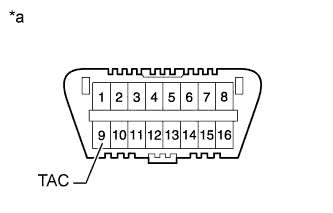
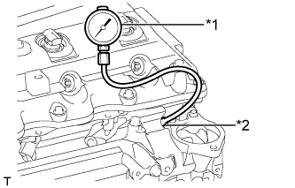

ДВИГАТЕЛЬ > ПРОВЕРКА БЕЗ СНЯТИЯ С АВТОМОБИЛЯ |
| 1. ПРОВЕРЬТЕ ЧАСТОТУ ВРАЩЕНИЯ НА ХОЛОСТОМ ХОДУ И МАКСИМАЛЬНУЮ ЧАСТОТУ ВРАЩЕНИЯ КОЛЕНЧАТОГО ВАЛА ДВИГАТЕЛЯ |
Подсоедините портативный диагностический прибор к DLC3.
|  |
Если портативный диагностический прибор отсутствует, подсоедините щуп тахометра к контакту 9 (TAC) DLC3 с помощью SST.
| *a | Вид спереди разъема DLC3 |
Проверьте частоту вращения коленчатого вала двигателя на холостом ходу.
Запустите двигатель и проверьте частоту вращения холостого хода.
| Параметр / Устройство | Заданные условия | |
| для моделей с автоматической трансмиссией | 650–750 об/мин | |
| для моделей с механической трансмиссией | Для моделей с DPF | 650–750 об/мин |
| Для моделей без DPF | 610-710 об/мин | |
Проверьте максимальную частоту.
Запустите двигатель.
До упора нажмите педаль акселератора.
Измерьте максимальную частоту.
| Параметр / Устройство | Заданные условия |
| Для моделей с DPF | 4500 - 4700 об/мин |
| Для моделей без DPF | 4450 - 4750 об/мин |
Если щуп тахометра подключен к DLC3, отсоедините его вместе с SST от контакта 9 разъема DLC3.
Отсоедините портативный диагностический прибор от DLC3.
| 2. ПРОВЕРЬТЕ ДАВЛЕНИЕ СЖАТИЯ В ЦИЛИНДРАХ |
для моделей без DPF:
Снимите 4 свечей накаливания (Нажмите здесь).
для моделей с DPF:
Снимите 4 свечей накаливания (Нажмите здесь).
Отсоедините 4 разъема форсунок.
Прокрутите коленчатый вал двигателя, чтобы вытеснить сажу и другие посторонние вещества из цилиндра.
|  |
Измерьте давление сжатия.
Вставьте SST (приспособление) в гнездо свечи накаливания.
| *1 | SST (компрессометр) |
| *2 | SST (приспособление) |
Подсоедините SST (компрессометр) к SST (приспособление).
Измерьте давление сжатия, прокручивая коленчатый вал двигателя.
Выполните описанную выше процедуру для каждого цилиндра.
Снимите SST (приспособление и компрессометр).
Подсоедините 4 разъема форсунок.
для моделей без DPF:
Установите 4 свечи накаливания (Нажмите здесь).
для моделей с DPF:
Установите 4 свечи накаливания (Нажмите здесь).